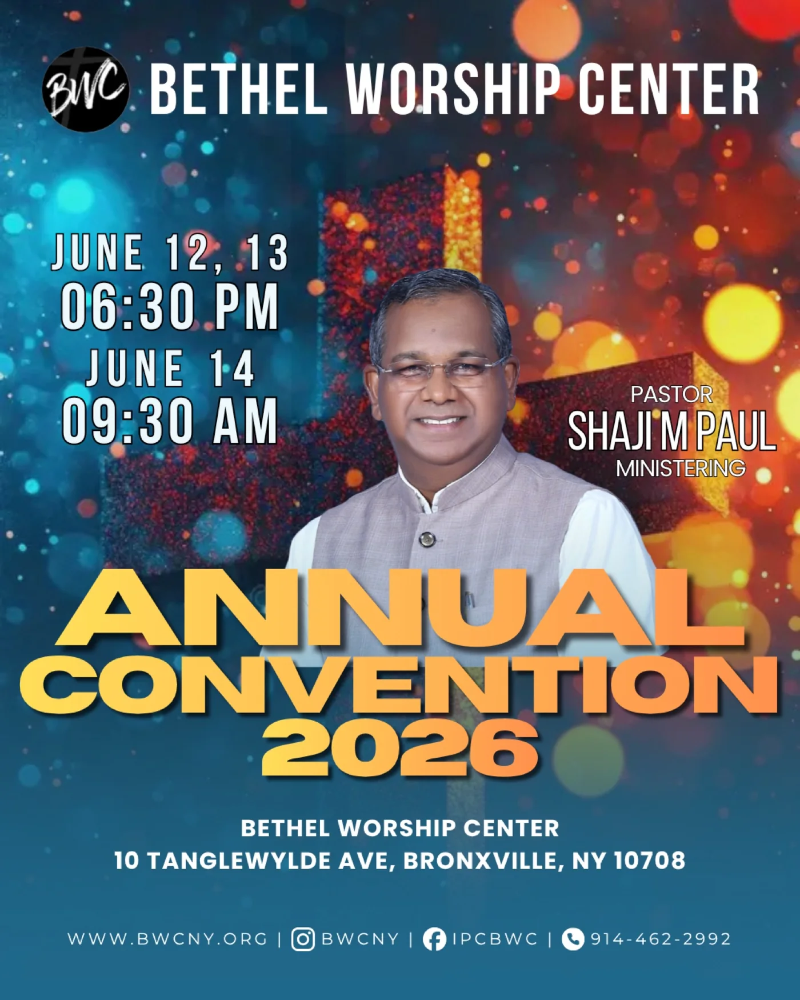

Church life & events
Life at Bethel.
Worship, conversation, and time together. Take a look at life around Bethel and find a gathering to join.

Every week
Gatherings through the week.



From the church calendar · Past event
Annual Convention 2026.
June 12–14, 2026 · Pastor Shaji Paul
Three days set aside for preaching, prayer, and worship at Bethel Worship Center.
Join our next weekly gathering